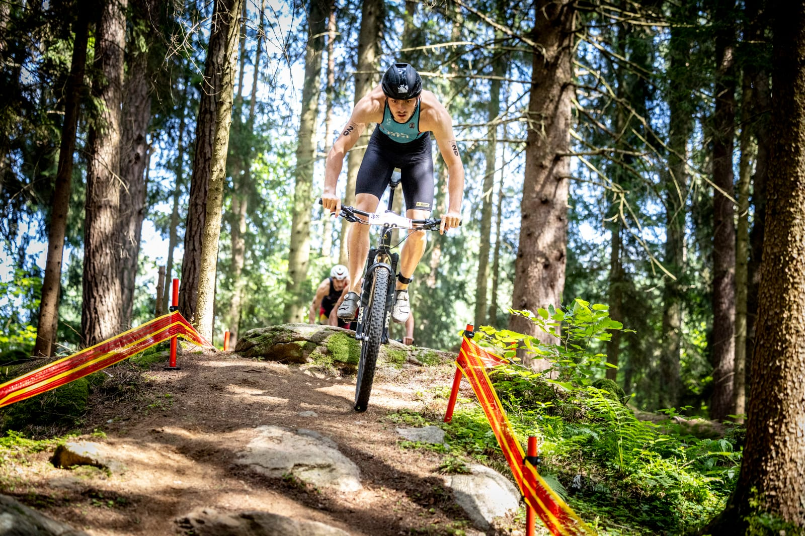
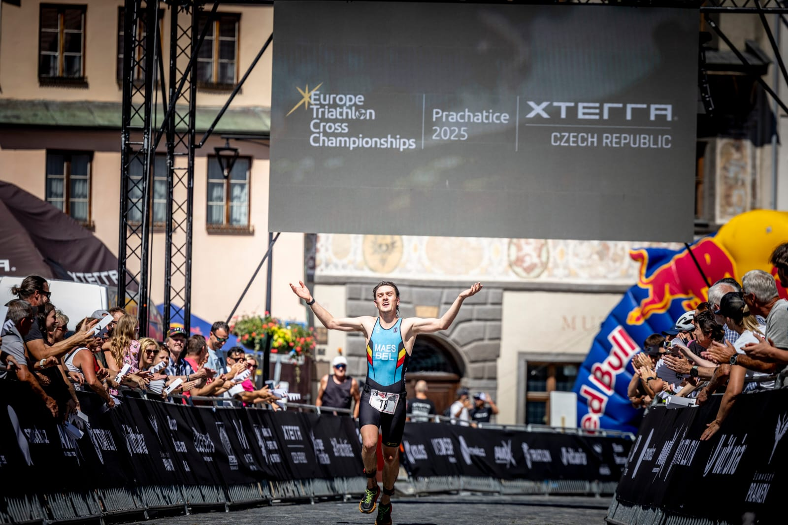

Cycling Tests
If you are a cyclist looking to test your fitness level, or want to determine your optimal training zones.
Get in touch with me to schedule a testing session!

If you are a cyclist looking to test your fitness level, or want to determine your optimal training zones.
Get in touch with me to schedule a testing session!

If you are a runner looking to test your fitness level, I offer field tests in the Ghent region, so you can determine your optimal training zones!
Get in touch with me to schedule a testing session!